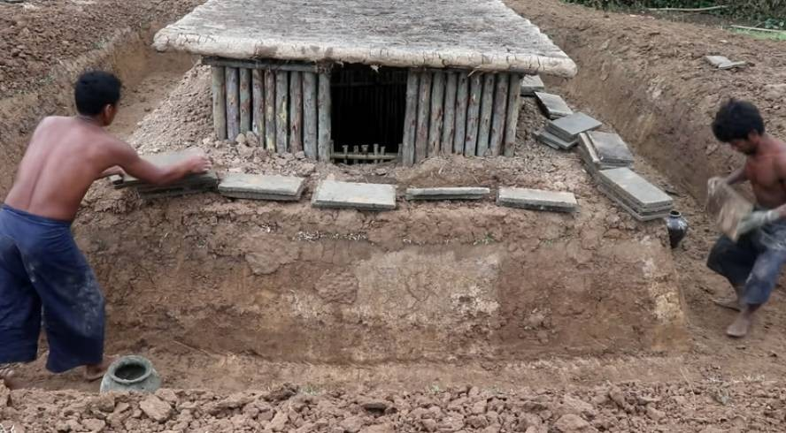
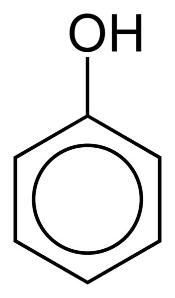
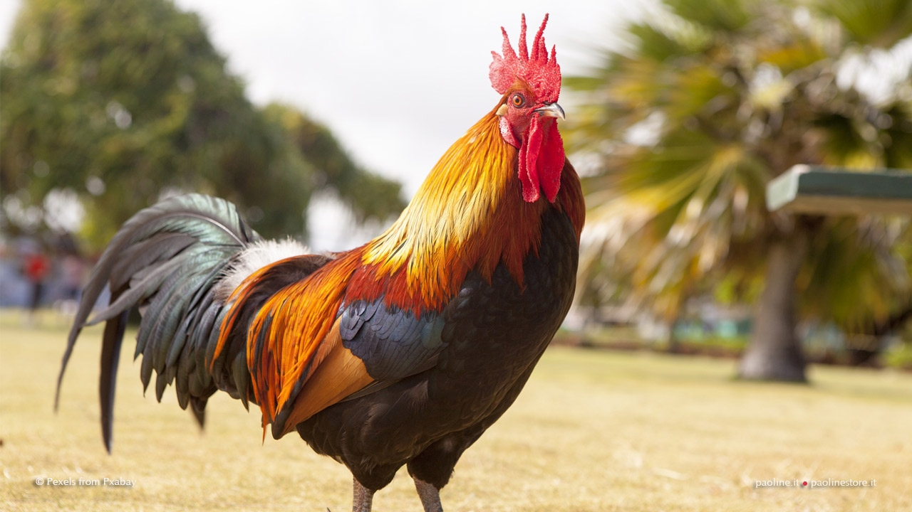

Il pogo XXX é un gruppo fondato nel lontano 20/12/15 nella penisola mediterranea, a poche decine di kilometri dalla costa adriatica e a 5 050 000 000 kilometri da Plutone (luogo preciso --> 43.95208120926989, 12.653805 ).
Originariamente la crew era costituita da circa 8 membri, accomunati da una serie di interessi dalla dubbia moralitá.
Dopo una serie di epurazioni, il team raggiunge il suo massimo splendore all'epilogo del 2018, anno antecedente al 160° anniversario trascorso dall'invenzione della cocaina per opera del celberrimo Albert Niemann.
Da allora, le scorribande della crew sono susseguite per diverso tempo, per andar poi scemando nel tempo.
Le ultime apparizioni sono riconducibili ad alcuni luoghi simbolici quali: 📍 e 🐓 .
Qualora il lettore abbia sviluppato un discreto senso di autoconsapevolezza e, in quanto contrario ai principi esposti, ritenga opportuno denunciare tali brutalità alle autorità competenti, può accedere al seguente link.
Nel caso invece si trovi in armonia con quanto enunciato, può tranquillamente procedere alla lettura.
Fra i membri onorari della cerchia possiamo ritrovare:
Alb 🚀 : É nato prima l'uovo o la gallina? É stato inventato prima l'accedino o il fiammifero? É stato fondato prima il milan o l'inter? Non si sa chi dei due twins sia venuto prima alla luce, ma di certo lui é quello che da piú tempo non fa visita al parruchiere.
Segni particolari: Raggiunge l'onniscenza solo dopo aver ingurgitato e successivamente rigettato l'intero bar della serata.
Debolezza: Lucchetti.
G - Lory 🏎 : si narra che qualche tempo fa, Richard Tyler Blevins, in arte noto come Ninja, ad una dichiarazione rilasciata alla CAR, agenzia giornalistica sud africana di fama mondiale, confessó di aver recentemente cancellato dal proprio pc il famoso battle royale di epic games, grazie a cui in passato riuscí a conquistare i riflettori di tutto il mondo, per paura di finire sul mirino del qui presente LoryErco98, e, come da testuali parole dell'ormai "ex" pro-player: "venir aperto in 2 come una poveraccia".
Segni particolari: Rapporto di conflitto con i bicicli di color vermiglio.
Debolezza: Vetro.
Serial Chiller 🎰 : Dj, pilota di droni, pro-player di pinturillo, e recordman di ore successive passate in live su twitch. Tutto, fuorché un ingegnere. Passa la sua esistenza a fissare colloqui dalla dubbia utilitá, senza giungere mai al punto.
Segni particolari: non sa arrotondare i resti delle pizze.
Debolezza: Vodka alla menta.
Sick Luke 🦕 : Ariano di sangue. Detentore di: una villa, una seconda villa che spaccia per una'azienda, uno yacht, un pianaforte, una canoa, svariati pannelli solari, un samsung galaxy s20 (con cover piú resistente del vibranio), e un Q47. Nonostante tutto questo, non esita ad abbassarsi ad umile contadino quando la situazione lo richiede
Segni particolari: Se non si laurea entro settembre, gli decade il percorso di studi invalidando tutti gli esami sostenuti sino ad ora (ma questo ancora lui non lo sa).
Debolezza: Freddo.
Tommy Gun 🚮 : Origini sconosciute. Nutre profondo rancore verso chiunque mostri una tonalitá della cute differente dalla sua. Recrimina di non gudagnare abbastanza denaro, sebbene all'attivo: sia in possesso di 36 abbonamenti differneti, disincentivi l'utilizzo delle offerte del Mcdonald, causi un numero variabile di incidenti mensili fra i 2 e i 43, e aderisca a qualunque forma di pasto venga organizzato nell'arco della settimana. Possiamo concludere affermando che rappresenta uno dei massimi esponenti del consumismo moderno, ma di questo, a lui, non frega un cazzo, in quanto ha intenzione di far la fine di Maradona da qui a qualche anno.
Segni particolari: Non é mai stato a san patrignano (per il momento).
Debolezza: Rhum.